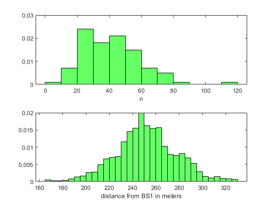

clc; clear; close all;
R = 250;
L = 2 * R;
speed = 1;
sample_time = 0.1;
step_distance = speed * sample_time;
g = 150;
min_distance = sqrt(g);
max_distance = L - sqrt(g);
d1 = (min_distance:step_distance:max_distance);
d2 = L - d1;
d3 = abs(R - d1);
d4 = abs(R - d1);
Ns = length(d1);
Pt = 20;
Po = 38;
grad1 = 2;
grad2 = 2;
alpha = exp(-1/85);
sigma1 = sqrt(8);
sigma2 = sqrt(sigma1^2 * (1 - alpha^2));
RSS01 = Pt - Po - (10 * grad1 * log10(d1) + 10 * grad2 * log10(d1/g));
RSS02 = Pt - Po - (10 * grad1 * log10(d2) + 10 * grad2 * log10(d2/g));
RSS_corner = Pt - Po - (10 * grad1 * log10(R) + 10 * grad2 * log10(R/g));
RSS03 = RSS_corner - (10 * grad1 * log10(d3) + 10 * grad2 * log10(d3/g));
RSS04 = RSS_corner - (10 * grad1 * log10(d4) + 10 * grad2 * log10(d4/g));
for i=1:Ns
if d3(i) < min_distance
RSS03(i) = RSS_corner;
end
if d4(i) < min_distance
RSS04(i) = RSS_corner;
end
end
s1 = zeros(1,Ns);
s2 = zeros(1,Ns);
s3 = zeros(1,Ns);
s4 = zeros(1,Ns);
N = 100;
thres = -68;
H = 5 ;
n_ho1 = zeros(1,N);
n_ho2 = zeros(1,N);
n_ho3 = zeros(1,N);
n_ho4 = zeros(1,N);
loc_ho1 = [];
loc_ho2 = [];
loc_ho3 = [];
loc_ho4 = [];
for k=1:N
s1(1) = sigma1 * randn(1);
s2(1) = sigma1 * randn(1);
s3(1) = sigma1 * randn(1);
s4(1) = sigma1 * randn(1);
for i=2:Ns
s1(i) = alpha * s1(i-1) + sigma2 * randn(1);
s2(i) = alpha * s2(i-1) + sigma2 * randn(1);
s3(i) = alpha * s3(i-1) + sigma2 * randn(1);
s4(i) = alpha * s4(i-1) + sigma2 * randn(1);
end
RSS1 = RSS01 + s1;
RSS2 = RSS02 + s2;
RSS3 = RSS03 + s3;
RSS4 = RSS04 + s4;
RSS = [RSS1; RSS2; RSS3; RSS4];
current = RSS(1,:);
n = 0;
for j=1:Ns
current_RSS = current(j);
[RSS_max, ind] = max([RSS1(j), RSS2(j), RSS3(j), RSS4(j)]);
if RSS_max > current_RSS
current_RSS = RSS_max;
current = RSS(ind,:);
n = n + 1;
loc_ho1 = [loc_ho1 d1(j)];
end
end
n_ho1(k) = n;
current = RSS(1,:);
n = 0;
for j=1:Ns
current_RSS = current(j);
[RSS_max, ind] = max([RSS1(j), RSS2(j), RSS3(j), RSS4(j)]);
if current_RSS < thres
if RSS_max > current_RSS
current_RSS = RSS_max;
current = RSS(ind,:);
n = n + 1;
loc_ho2 = [loc_ho2 d1(j)];
end
end
end
n_ho2(k) = n;
current = RSS(1,:);
n = 0;
for j=1:Ns
current_RSS = current(j);
[RSS_max, ind] = max([RSS1(j), RSS2(j), RSS3(j), RSS4(j)]);
RSS_max = RSS_max - H;
if RSS_max > current_RSS + H
current_RSS = RSS_max;
current = RSS(ind,:);
n = n + 1;
loc_ho3 = [loc_ho3 d1(j)];
end
end
n_ho3(k) = n;
current = RSS(1,:);
n = 0;
for j=1:Ns
current_RSS = current(j);
if current_RSS < thres
[RSS_max, ind] = max([RSS1(j), RSS2(j), RSS3(j), RSS4(j)]);
RSS_max = RSS_max - H;
if RSS_max > current_RSS + H
current_RSS = RSS_max;
current = RSS(ind,:);
n = n + 1;
loc_ho3 = [loc_ho3 d1(j)];
end
end
end
n_ho3(k) = n;
end
figure(1)
plot(d1, RSS1,'r')
hold on
plot(d1, RSS2,'b')
hold on
plot(d1, RSS3,'g')
hold on
plot(d1, RSS4,'c')
title('RSS versus distance along route')
xlabel('distance from BS1 in meters');
ylabel('dBm');
figure(2)
title('simple RSS')
subplot(211)
histogram(n_ho1, 'FaceColor', 'r', Normalization='pdf')
xlabel('n')
subplot(212)
histogram(loc_ho1, 'FaceColor', 'r', Normalization='pdf')
xlabel('distance from BS1 in meters');
figure(3)
title('RSS with thres')
subplot(211)
histogram(n_ho2, 'FaceColor', 'g', Normalization='pdf')
xlabel('n')
subplot(212)
histogram(loc_ho2, 'FaceColor', 'g', Normalization='pdf')
xlabel('distance from BS1 in meters');
figure(4)
title('RSS and Hystersis')
subplot(211)
histogram(n_ho3, 'FaceColor', 'b', Normalization='pdf')
xlabel('n')
subplot(212)
histogram(loc_ho3, 'FaceColor', 'b', Normalization='pdf')
xlabel('distance from BS1 in meters');
figure(5)
title('RSS with thres and Hystersis')
subplot(211)
histogram(n_ho4, 'FaceColor', 'k', Normalization='pdf')
xlabel('n')
subplot(212)
histogram(loc_ho4, 'FaceColor', 'k', Normalization='pdf')
xlabel('distance from BS1 in meters');
